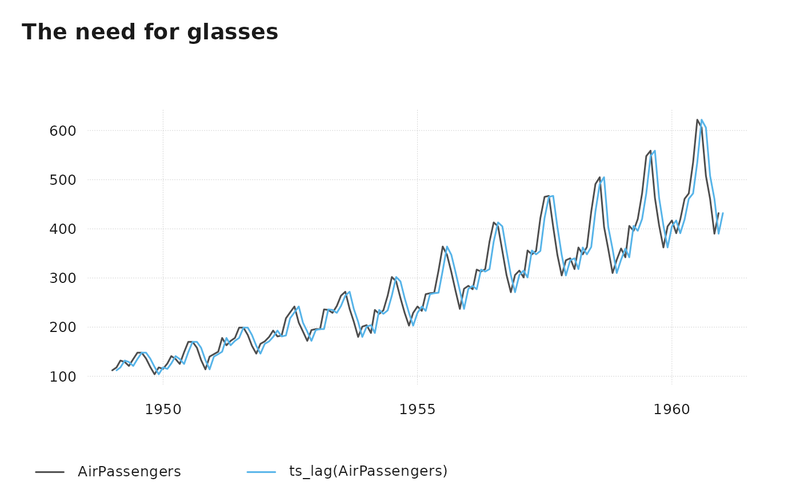

Shift time stamps in ts-boxable time series, either by a number of periods or by a fixed amount of time.
Value
a ts-boxable object of the same class as x, i.e., an object of
class ts, xts, zoo, zooreg, data.frame, data.table, tbl,
tbl_ts, tbl_time, tis, irts or timeSeries.
Details
The lag order, by, is defined the opposite way as in R base. Thus, -1 is a
lead and +1 a lag.
If by is integer, the time stamp is shifted by the number of periods. This
requires the series to be regular.
If by is character, the time stamp is shifted by a specific amount of time.
This can be one of one of "sec", "min", "hour", "day", "week",
"month", "quarter" or "year", optionally preceded by a (positive or
negative) integer and a space, or followed by plural "s". This is passed to
base::seq.Date(). This does not require the series to be regular.
Examples
# \donttest{
ts_plot(AirPassengers, ts_lag(AirPassengers), title = "The need for glasses")

# }
ts_lag(fdeaths, "1 month")
#> Jan Feb Mar Apr May Jun Jul Aug Sep Oct Nov Dec
#> 1974 901 689 827 677 522 406 441 393 387 582 578
#> 1975 666 830 752 785 664 467 438 421 412 343 440 531
#> 1976 771 767 1141 896 532 447 420 376 330 357 445 546
#> 1977 764 862 660 663 643 502 392 411 348 387 385 411
#> 1978 638 796 853 737 546 530 446 431 362 387 430 425
#> 1979 679 821 785 727 612 478 429 405 379 393 411 487
#> 1980 574
ts_lag(fdeaths, "1 year")
#> Jan Feb Mar Apr May Jun Jul Aug Sep Oct Nov Dec
#> 1975 901 689 827 677 522 406 441 393 387 582 578 666
#> 1976 830 752 785 664 467 438 421 412 343 440 531 771
#> 1977 767 1141 896 532 447 420 376 330 357 445 546 764
#> 1978 862 660 663 643 502 392 411 348 387 385 411 638
#> 1979 796 853 737 546 530 446 431 362 387 430 425 679
#> 1980 821 785 727 612 478 429 405 379 393 411 487 574
x <- ts_df(fdeaths)
ts_lag(x, "2 day")
#> time value
#> 1 1974-01-03 901
#> 2 1974-02-03 689
#> 3 1974-03-03 827
#> 4 1974-04-03 677
#> 5 1974-05-03 522
#> 6 1974-06-03 406
#> 7 1974-07-03 441
#> 8 1974-08-03 393
#> 9 1974-09-03 387
#> 10 1974-10-03 582
#> 11 1974-11-03 578
#> 12 1974-12-03 666
#> 13 1975-01-03 830
#> 14 1975-02-03 752
#> 15 1975-03-03 785
#> 16 1975-04-03 664
#> 17 1975-05-03 467
#> 18 1975-06-03 438
#> 19 1975-07-03 421
#> 20 1975-08-03 412
#> 21 1975-09-03 343
#> 22 1975-10-03 440
#> 23 1975-11-03 531
#> 24 1975-12-03 771
#> 25 1976-01-03 767
#> 26 1976-02-03 1141
#> 27 1976-03-03 896
#> 28 1976-04-03 532
#> 29 1976-05-03 447
#> 30 1976-06-03 420
#> 31 1976-07-03 376
#> 32 1976-08-03 330
#> 33 1976-09-03 357
#> 34 1976-10-03 445
#> 35 1976-11-03 546
#> 36 1976-12-03 764
#> 37 1977-01-03 862
#> 38 1977-02-03 660
#> 39 1977-03-03 663
#> 40 1977-04-03 643
#> 41 1977-05-03 502
#> 42 1977-06-03 392
#> 43 1977-07-03 411
#> 44 1977-08-03 348
#> 45 1977-09-03 387
#> 46 1977-10-03 385
#> 47 1977-11-03 411
#> 48 1977-12-03 638
#> 49 1978-01-03 796
#> 50 1978-02-03 853
#> 51 1978-03-03 737
#> 52 1978-04-03 546
#> 53 1978-05-03 530
#> 54 1978-06-03 446
#> 55 1978-07-03 431
#> 56 1978-08-03 362
#> 57 1978-09-03 387
#> 58 1978-10-03 430
#> 59 1978-11-03 425
#> 60 1978-12-03 679
#> 61 1979-01-03 821
#> 62 1979-02-03 785
#> 63 1979-03-03 727
#> 64 1979-04-03 612
#> 65 1979-05-03 478
#> 66 1979-06-03 429
#> 67 1979-07-03 405
#> 68 1979-08-03 379
#> 69 1979-09-03 393
#> 70 1979-10-03 411
#> 71 1979-11-03 487
#> 72 1979-12-03 574
ts_lag(x, "2 min")
#> time value
#> 1 1974-01-01 00:02:00 901
#> 2 1974-02-01 00:02:00 689
#> 3 1974-03-01 00:02:00 827
#> 4 1974-04-01 00:02:00 677
#> 5 1974-05-01 00:02:00 522
#> 6 1974-06-01 00:02:00 406
#> 7 1974-07-01 00:02:00 441
#> 8 1974-08-01 00:02:00 393
#> 9 1974-09-01 00:02:00 387
#> 10 1974-10-01 00:02:00 582
#> 11 1974-11-01 00:02:00 578
#> 12 1974-12-01 00:02:00 666
#> 13 1975-01-01 00:02:00 830
#> 14 1975-02-01 00:02:00 752
#> 15 1975-03-01 00:02:00 785
#> 16 1975-04-01 00:02:00 664
#> 17 1975-05-01 00:02:00 467
#> 18 1975-06-01 00:02:00 438
#> 19 1975-07-01 00:02:00 421
#> 20 1975-08-01 00:02:00 412
#> 21 1975-09-01 00:02:00 343
#> 22 1975-10-01 00:02:00 440
#> 23 1975-11-01 00:02:00 531
#> 24 1975-12-01 00:02:00 771
#> 25 1976-01-01 00:02:00 767
#> 26 1976-02-01 00:02:00 1141
#> 27 1976-03-01 00:02:00 896
#> 28 1976-04-01 00:02:00 532
#> 29 1976-05-01 00:02:00 447
#> 30 1976-06-01 00:02:00 420
#> 31 1976-07-01 00:02:00 376
#> 32 1976-08-01 00:02:00 330
#> 33 1976-09-01 00:02:00 357
#> 34 1976-10-01 00:02:00 445
#> 35 1976-11-01 00:02:00 546
#> 36 1976-12-01 00:02:00 764
#> 37 1977-01-01 00:02:00 862
#> 38 1977-02-01 00:02:00 660
#> 39 1977-03-01 00:02:00 663
#> 40 1977-04-01 00:02:00 643
#> 41 1977-05-01 00:02:00 502
#> 42 1977-06-01 00:02:00 392
#> 43 1977-07-01 00:02:00 411
#> 44 1977-08-01 00:02:00 348
#> 45 1977-09-01 00:02:00 387
#> 46 1977-10-01 00:02:00 385
#> 47 1977-11-01 00:02:00 411
#> 48 1977-12-01 00:02:00 638
#> 49 1978-01-01 00:02:00 796
#> 50 1978-02-01 00:02:00 853
#> 51 1978-03-01 00:02:00 737
#> 52 1978-04-01 00:02:00 546
#> 53 1978-05-01 00:02:00 530
#> 54 1978-06-01 00:02:00 446
#> 55 1978-07-01 00:02:00 431
#> 56 1978-08-01 00:02:00 362
#> 57 1978-09-01 00:02:00 387
#> 58 1978-10-01 00:02:00 430
#> 59 1978-11-01 00:02:00 425
#> 60 1978-12-01 00:02:00 679
#> 61 1979-01-01 00:02:00 821
#> 62 1979-02-01 00:02:00 785
#> 63 1979-03-01 00:02:00 727
#> 64 1979-04-01 00:02:00 612
#> 65 1979-05-01 00:02:00 478
#> 66 1979-06-01 00:02:00 429
#> 67 1979-07-01 00:02:00 405
#> 68 1979-08-01 00:02:00 379
#> 69 1979-09-01 00:02:00 393
#> 70 1979-10-01 00:02:00 411
#> 71 1979-11-01 00:02:00 487
#> 72 1979-12-01 00:02:00 574
ts_lag(x, "-1 day")
#> time value
#> 1 1973-12-31 901
#> 2 1974-01-31 689
#> 3 1974-02-28 827
#> 4 1974-03-31 677
#> 5 1974-04-30 522
#> 6 1974-05-31 406
#> 7 1974-06-30 441
#> 8 1974-07-31 393
#> 9 1974-08-31 387
#> 10 1974-09-30 582
#> 11 1974-10-31 578
#> 12 1974-11-30 666
#> 13 1974-12-31 830
#> 14 1975-01-31 752
#> 15 1975-02-28 785
#> 16 1975-03-31 664
#> 17 1975-04-30 467
#> 18 1975-05-31 438
#> 19 1975-06-30 421
#> 20 1975-07-31 412
#> 21 1975-08-31 343
#> 22 1975-09-30 440
#> 23 1975-10-31 531
#> 24 1975-11-30 771
#> 25 1975-12-31 767
#> 26 1976-01-31 1141
#> 27 1976-02-29 896
#> 28 1976-03-31 532
#> 29 1976-04-30 447
#> 30 1976-05-31 420
#> 31 1976-06-30 376
#> 32 1976-07-31 330
#> 33 1976-08-31 357
#> 34 1976-09-30 445
#> 35 1976-10-31 546
#> 36 1976-11-30 764
#> 37 1976-12-31 862
#> 38 1977-01-31 660
#> 39 1977-02-28 663
#> 40 1977-03-31 643
#> 41 1977-04-30 502
#> 42 1977-05-31 392
#> 43 1977-06-30 411
#> 44 1977-07-31 348
#> 45 1977-08-31 387
#> 46 1977-09-30 385
#> 47 1977-10-31 411
#> 48 1977-11-30 638
#> 49 1977-12-31 796
#> 50 1978-01-31 853
#> 51 1978-02-28 737
#> 52 1978-03-31 546
#> 53 1978-04-30 530
#> 54 1978-05-31 446
#> 55 1978-06-30 431
#> 56 1978-07-31 362
#> 57 1978-08-31 387
#> 58 1978-09-30 430
#> 59 1978-10-31 425
#> 60 1978-11-30 679
#> 61 1978-12-31 821
#> 62 1979-01-31 785
#> 63 1979-02-28 727
#> 64 1979-03-31 612
#> 65 1979-04-30 478
#> 66 1979-05-31 429
#> 67 1979-06-30 405
#> 68 1979-07-31 379
#> 69 1979-08-31 393
#> 70 1979-09-30 411
#> 71 1979-10-31 487
#> 72 1979-11-30 574